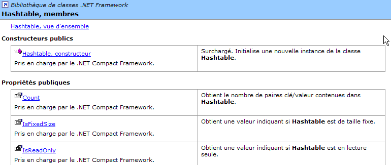
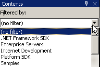
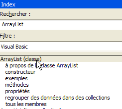
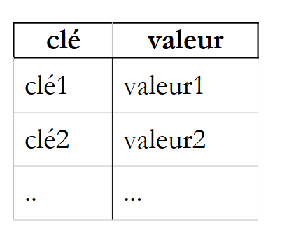
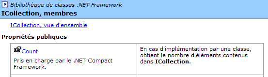

4. Classes .NET d'usage courant
Nous présentons ici quelques classes de la plate-forme .NET présentant un intérêt, même pour un débutant. Nous montrons tout d'abord comment obtenir des renseignements sur les centaines de classes disponibles.
4.1. Chercher de l'aide avec SDK.NET
4.1.1. wincv
Si on a installé seulement le SDK et pas Visual Studio.NET on pourra utiliser le programme wincv.exe situé normalement dans l'arborescence du sdk, par exemple C:\Program Files\Microsoft Visual Studio .NET 2003\SDK\v1.1. Lorsqu'on lance cet utilitaire, on a l'interface suivante :
 |
On tape en (1) le nom de la classe désirée. Cela ramène en (2) divers thèmes possibles. On choisit celui qui convient et on a le résultat en (3), ici la classe HashTable. Cette méthode convient si on connaît le nom de la classe que l'on cherche. Si on veut explorer la liste des possibiltés offertes par la plate-forme .NET ou pourra utiliser le fichier HTML StartHere.htm situé lui aussi directement dans le dossier d'installation de SSK.Net, par exemple C:\Program Files\Microsoft Visual Studio .NET 2003\SDK\v1.

Le lien .NET Framework SDK Documentation est celui qu'il faut suivre pour avoir une vue d'ensemble des classes .NET :

Là, on suivra le lien [Bibliothèque de classes]. On y trouve la liste de toutes les classes de .NET :

Suivons par exemple le lien System.Collections. Cet espace de noms regroupe diverses classes implémentant des collections dont la classe HashTable :

Suivons le lien HashTable ci-dessous :

Nous obtenons la page suivante :

On remarquera ci-dessous, la position de la main. Elle pointe sur un lien permettant de préciser le langage désiré, ici Visual Basic.
On y trouve le prototype de la classe ainsi que des exemples d'utilisation. Suivons le lien [Hashtable, membres] ci-dessous :

On obtient la description complète de la classe :

Cette méthode est la meilleure pour découvrir le SDK et ses classes. L'outil WinCV s'avère utile lorsqu'on connaît déjà un peu la classe et qu'on a oublié certains de ses membres. WinCV permet alors de retrouver rapidement la classe et ses membres.
4.2. Chercher de l'aide sur les classes avec VS.NET
Nous donnons ici quelques indications pour trouver de l'aide avec Visual Studio.NET
4.2.1. Option Aide
Prenons l'option [?] du menu.

On obtient la fenêtre suivante :

Dans la liste déroulante, on peut choisir un filtre d'aide. Ici, on prendra le filtre [Visual Basic].

Deux aides sont utiles :
- l'aide sur le langage VB.NET lui-même (syntaxe)
- l'aide sur les classes.NET utilisables par le langage VB.NET
L'aide au langage VB.NET est accessible via [Visual Studio.NET/Visual Basic et Visual C#/Reference/Visual Basic] :

On obtient la page d'aide suivante :

A partir de là, les différentes sous-rubriques nous permettent d'avoir de l'aide sur différents thèmes de VB.NET. On prêtera attention aux tutoriels de VB.NET :

Pour avoir accès aux différentes classes de la plate-forme .NET, on choisira l'aide [Visual Studio.NET/.NET Framework].

On s'intéressera notamment à la rubrique [Référence/Bibliothèque de classes] :

Supposons qu'on s'intéresse à la classe [ArrayList]. Elle se trouve dans l'espace de noms [System.Collections]. Il faut le savoir sinon on préfèrera la méthode de recherche exposée ci-après. On obtient l'aide suivante :

Le lien [ArrayList, classe] donne une vue d'ensemble de la classe :

Ce type de page existe pour toutes les classes. Elle donne un résumé de la classe avec des exemples. Pour une description des membres de la classe, on suivra le lien [ArrayList, membres] :

4.2.2. Aide/Index

L'option [Aide/index] permet de chercher une aide plus ciblée que l'aide précédente. Il suffit de taper le mot clé cherché :

L'avantage de cette méthode par rapport à la précédente est qu'on n'a pas besoin de savoir où se trouve ce qu'on cherche dans le système d'aide. C'est probablement la méthode à préférer lorsqu'on fait une recherche ciblé, l'autre méthode étant plus appropriée à une découverte de tout ce que propose l'aide.
4.3. La classe String
La classe String présente de nombreuses propriétés et méthodes. En voici quelques-unes :
nombre de caractères de la chaîne | |
propriété indexée par défaut. [String].Chars(i) est le caractère n° i de la chaîne | |
rend vrai si la chaîne se termine par value | |
rend vrai si la chaîne commence par value | |
rend vrai si la chaîne est égale à value | |
rend la première position dans la chaîne de la chaîne value - la recherche commence à partir du caractère n° 0 | |
rend la première position dans la chaîne de la chaîne value - la recherche commence à partir du caractère n° startIndex | |
méthode de classe - rend une chaîne de caractères, résultat de la concaténation des valeurs du tableau value avec le séparateur separator | |
rend une chaîne copie de la chaîne courante où le caractère oldChar a été remplacé par le caractère newChar | |
la chaîne est vue comme une suite de champs séparés par les caractères présents dans le tableau separator. Le résultat est le tableau de ces champs | |
sous-chaîne de la chaîne courante commençant à la position startIndex et ayant length caractères | |
rend la chaîne courante en minuscules | |
rend la chaîne courante en majuscules | |
rend la chaîne courante débarrassée de ses espaces de début et fin |
Une chaîne C peut être considérée comme un tableau de caractères. Ainsi
- C.Chars(i) est le caractère i de C
- C.Length est le nombre de caractères de C
Considérons l'exemple suivant :
' options
Option Strict On
Option Explicit On
' espaces de noms
Imports System
Module test
Sub Main()
Dim uneChaine As String = "l'oiseau vole au-dessus des nuages"
affiche("uneChaine=" + uneChaine)
affiche("uneChaine.Length=" & uneChaine.Length)
affiche("chaine[10]=" + uneChaine.Chars(10))
affiche("uneChaine.IndexOf(""vole"")=" & uneChaine.IndexOf("vole"))
affiche("uneChaine.IndexOf(""x"")=" & uneChaine.IndexOf("x"))
affiche("uneChaine.LastIndexOf('a')=" & uneChaine.LastIndexOf("a"c))
affiche("uneChaine.LastIndexOf('x')=" & uneChaine.LastIndexOf("x"c))
affiche("uneChaine.Substring(4,7)=" + uneChaine.Substring(4, 7))
affiche("uneChaine.ToUpper()=" + uneChaine.ToUpper())
affiche("uneChaine.ToLower()=" + uneChaine.ToLower())
affiche("uneChaine.Replace('a','A')=" + uneChaine.Replace("a"c, "A"c))
Dim champs As String() = uneChaine.Split(Nothing)
Dim i As Integer
For i = 0 To champs.Length - 1
affiche("champs[" & i & "]=[" & champs(i) & "]")
Next i
affiche("Join("":"",champs)=" + System.String.Join(":", champs))
affiche("("" abc "").Trim()=[" + " abc ".Trim() + "]")
End Sub
' affiche
Sub affiche(ByVal msg As [String])
' affiche msg
Console.Out.WriteLine(msg)
End Sub
End Module
L'exécution donne les résultats suivants :
dos>vbc string1.vb
dos>string1
uneChaine=l'oiseau vole au-dessus des nuages
uneChaine.Length=34
chaine[10]=o
uneChaine.IndexOf("vole")=9
uneChaine.IndexOf("x")=-1
uneChaine.LastIndexOf('a')=30
uneChaine.LastIndexOf('x')=-1
uneChaine.Substring(4,7)=seau vo
uneChaine.ToUpper()=L'OISEAU VOLE AU-DESSUS DES NUAGES
uneChaine.ToLower()=l'oiseau vole au-dessus des nuages
uneChaine.Replace('a','A')=l'oiseAu vole Au-dessus des nuAges
champs[0]=[l'oiseau]
champs[1]=[vole]
champs[2]=[au-dessus]
champs[3]=[des]
champs[4]=[nuages]
Join(":",champs)=l'oiseau:vole:au-dessus:des:nuages
(" abc ").Trim()=[abc]
Considérons un nouvel exemple :
' options
Option Strict On
Option Explicit On
' espaces de noms
Imports System
Module string2
Sub Main()
' la ligne à analyser
Dim ligne As String = "un:deux::trois:"
' les séparateurs de champs
Dim séparateurs() As Char = {":"c}
' split
Dim champs As String() = ligne.Split(séparateurs)
Dim i As Integer
For i = 0 To champs.Length - 1
Console.Out.WriteLine(("Champs[" & i & "]=" & champs(i)))
Next i
' join
Console.Out.WriteLine(("join=[" + System.String.Join(":", champs) + "]"))
End Sub
End Module
et les résultats d'exécution :
La méthode Split de la classe String permet de mettre dans un tableau les champs d'une chaîne de caractères. La définition de la méthode utilisée ici est la suivante :
tableau de caractères. Ces caractères représentent les caractères utilisés pour séparer les champs de la chaîne de caractères. Ainsi si la chaîne est [champ1, champ2, champ3] on pourra utiliser separator=new char() {","c}. Si le séparateur est une suite d'espaces on utilisera separator=nothing. | |
tableau de chaînes de caractères où chaque élément est un champ de la chaîne. |
La méthode Join est une méthode statique de la classe String :
tableau de chaînes de caractères | |
une chaîne de caractères qui servira de séparateur de champs | |
une chaîne de caractères formée de la concaténation des éléments du tableau value séparés par la chaîne separator. |
4.4. La classe Array
La classe Array implémente un tableau. Nous utiliserons dans notre exemple les propriétés et méthodes suivantes :
propriété - nombre d'éléments du tableau | |
méthode de classe - rend la position de value dans le tableau trié array - cherche à partir de la position index et avec length éléments | |
méthode de classe - copie length éléments de sourceArray dans destinationArray - destinationArray est créé pour l'occasion | |
méthode de classe - trie le tableau array - celui doit contenir un type de données ayant une fonction d'ordre par défaut (chaînes, nombres). |
Le programme suivant illustre l'utilisation de la classe Array :
' options
Option Strict On
Option Explicit On
' espaces de noms
Imports System
Module test
Sub Main()
' lecture des éléments d'un tableau tapés au clavier
Dim terminé As [Boolean] = False
Dim i As Integer = 0
Dim éléments1 As Double() = Nothing
Dim éléments2 As Double() = Nothing
Dim élément As Double = 0
Dim réponse As String = Nothing
Dim erreur As [Boolean] = False
While Not terminé
' question
Console.Out.Write(("Elément (réel) " & i & " du tableau (rien pour terminer) : "))
' lecture de la réponse
réponse = Console.ReadLine().Trim()
' fin de saisie si chaîne vide
If réponse.Equals("") Then
Exit While
End If
' vérification saisie
Try
élément = [Double].Parse(réponse)
erreur = False
Catch
Console.Error.WriteLine("Saisie incorrecte, recommencez")
erreur = True
End Try
' si pas d'erreur
If Not erreur Then
' nouveau tableau pour accueillir le nouvel élément
éléments2 = New Double(i) {}
' copie ancien tableau vers nouveau tableau
If i <> 0 Then
Array.Copy(éléments1, éléments2, i)
End If
' nouveau tableau devient ancien tableau
éléments1 = éléments2
' plus besoin du nouveau tableau
éléments2 = Nothing
' insertion nouvel élément
éléments1(i) = élément
' un élémt de plus dans le tableau
i += 1
End If
End While
' affichage tableau non trié
System.Console.Out.WriteLine("Tableau non trié")
For i = 0 To éléments1.Length - 1
Console.Out.WriteLine(("éléments[" & i & "]=" & éléments1(i)))
Next i
' tri du tableau
System.Array.Sort(éléments1)
' affichage tableau trié
System.Console.Out.WriteLine("Tableau trié")
For i = 0 To éléments1.Length - 1
Console.Out.WriteLine(("éléments[" & i & "]=" & éléments1(i)))
Next i
' Recherche
While Not terminé
' question
Console.Out.Write("Elément cherché (rien pour arrêter) : ")
' lecture-vérification réponse
réponse = Console.ReadLine().Trim()
' fini ?
If réponse.Equals("") Then
Exit While
End If
' vérification
Try
élément = [Double].Parse(réponse)
erreur = False
Catch
Console.Error.WriteLine("Saisie incorrecte, recommencez")
erreur = True
End Try
' si pas d'erreur
If Not erreur Then
' on cherche l'élément dans le tableau trié
i = System.Array.BinarySearch(éléments1, 0, éléments1.Length, élément)
' Affichage réponse
If i >= 0 Then
Console.Out.WriteLine(("Trouvé en position " & i))
Else
Console.Out.WriteLine("Pas dans le tableau")
End If
End If
End While
End Sub
End Module
Les résultats écran sont les suivants :
Elément (réel) 0 du tableau (rien pour terminer) : 10,4
Elément (réel) 1 du tableau (rien pour terminer) : 5,2
Elément (réel) 2 du tableau (rien pour terminer) : 8,7
Elément (réel) 3 du tableau (rien pour terminer) : 3,6
Elément (réel) 4 du tableau (rien pour terminer) :
Tableau non trié
éléments[0]=10,4
éléments[1]=5,2
éléments[2]=8,7
éléments[3]=3,6
Tableau trié
éléments[0]=3,6
éléments[1]=5,2
éléments[2]=8,7
éléments[3]=10,4
Elément cherché (rien pour arrêter) : 8,7
Trouvé en position 2
Elément cherché (rien pour arrêter) : 11
Pas dans le tableau
Elément cherché (rien pour arrêter) : a
Saisie incorrecte, recommencez
Elément cherché (rien pour arrêter) :
La première partie du programme construit un tableau à partir de données numériques tapées au clavier. Le tableau ne peut être dimensionné à priori puisqu'on ne connaît pas le nombre d'éléments que va taper l'utilisateur. On travaille alors avec deux tableaux éléments1 et éléments2.
' nouveau tableau pour accueillir le nouvel élément
éléments2 = New Double(i) {}
' copie ancien tableau vers nouveau tableau
If i <> 0 Then
Array.Copy(éléments1, éléments2, i)
End If
' nouveau tableau devient ancien tableau
éléments1 = éléments2
' plus besoin du nouveau tableau
éléments2 = Nothing
' insertion nouvel élément
éléments1(i) = élément
' un élémt de plus dans le tableau
i += 1
Le tableau éléments1 contient les valeurs actuellement saisies. Lorsque l'utilisateur ajoute une nouvelle valeur, on construit un tableau éléments2 avec un élément de plus que éléments1, on copie le contenu de éléments1 dans éléments2 (Array.Copy), on fait "pointer" éléments1 sur éléments2 et enfin on ajoute le nouvel élément à éléments1. C'est un processus complexe qui peut être simplifié si au lieu d'utiliser un tableau de taille fixe (Array) on utilise un tableau de taille variable (ArrayList).
Le tableau est trié avec la méthode Array.Sort. Cette méthode peut être appelée avec différents paramètres précisant les règles de tri. Sans paramètres, c'est ici un tri en ordre croissant qui est fait par défault. Enfin, la méthode Array.BinarySearch permet de chercher un élément dans un tableau trié.
4.5. La classe ArrayList
La classe ArrayList permet d'implémenter des tableaux de taille variable au cours de l'exécution du programme, ce que ne permet pas la classe Array précédente. Voici quelques-unes des propriétés et méthodes courantes :
construit une liste vide | |
nombre d'éléments de la collection | |
ajoute l'objet value à la fin de la collection | |
efface la liste | |
indice de l'objet value dans la liste ou -1 s'il n'existe pas | |
idem mais en cherchant à partir de l'élément n° startIndex | |
idem mais rend l'indice de la dernière occurrence de value dans la liste | |
idem mais en cherchant à partir de l'élément n° startIndex | |
enlève l'objet obj s'il existe dans la liste | |
enlève l'élément index de la liste | |
rend la position de l'objet value dans la liste ou -1 s'il ne s'y trouve pas. La liste doit être triée | |
trie la liste. Celle-ci doit contenir des objets ayant une relation d'ordre prédéfinie (chaînes, nombres) | |
trie la liste selon la relation d'ordre établie par la fonction comparer |
Reprenons l'exemple traité avec des objets de type Array et traitons-le avec des objets de type ArrayList :
' options
Option Strict On
Option Explicit On
' espaces de noms
Imports System
Imports System.Collections
Module test
Sub Main()
' lecture des éléments d'un tableau tapés au clavier
Dim terminé As [Boolean] = False
Dim i As Integer = 0
Dim éléments As New ArrayList
Dim élément As Double = 0
Dim réponse As String = Nothing
Dim erreur As [Boolean] = False
While Not terminé
' question
Console.Out.Write(("Elément (réel) " & i & " du tableau (rien pour terminer) : "))
' lecture de la réponse
réponse = Console.ReadLine().Trim()
' fin de saisie si chaîne vide
If réponse.Equals("") Then
Exit While
End If
' vérification saisie
Try
élément = Double.Parse(réponse)
erreur = False
Catch
Console.Error.WriteLine("Saisie incorrecte, recommencez")
erreur = True
End Try
' si pas d'erreur
If Not erreur Then
' un élémt de plus dans le tableau
éléments.Add(élément)
End If
End While
' affichage tableau non trié
System.Console.Out.WriteLine("Tableau non trié")
For i = 0 To éléments.Count - 1
Console.Out.WriteLine(("éléments[" & i & "]=" & éléments(i).ToString))
Next i ' tri du tableau
éléments.Sort()
' affichage tableau trié
System.Console.Out.WriteLine("Tableau trié")
For i = 0 To éléments.Count - 1
Console.Out.WriteLine(("éléments[" & i & "]=" & éléments(i).ToString))
Next i
' Recherche
While Not terminé
' question
Console.Out.Write("Elément cherché (rien pour arrêter) : ")
' lecture-vérification réponse
réponse = Console.ReadLine().Trim()
' fini ?
If réponse.Equals("") Then
Exit While
End If
' vérification
Try
élément = [Double].Parse(réponse)
erreur = False
Catch
Console.Error.WriteLine("Saisie incorrecte, recommencez")
erreur = True
End Try
' si pas d'erreur
If Not erreur Then
' on cherche l'élément dans le tableau trié
i = éléments.BinarySearch(élément)
' Affichage réponse
If i >= 0 Then
Console.Out.WriteLine(("Trouvé en position " & i))
Else
Console.Out.WriteLine("Pas dans le tableau")
End If
End If
End While
End Sub
End Module
Les résultats d'exécution sont les suivants :
Elément (réel) 0 du tableau (rien pour terminer) : 10,4
Elément (réel) 0 du tableau (rien pour terminer) : 5,2
Elément (réel) 0 du tableau (rien pour terminer) : a
Saisie incorrecte, recommencez
Elément (réel) 0 du tableau (rien pour terminer) : 3,7
Elément (réel) 0 du tableau (rien pour terminer) : 15
Elément (réel) 0 du tableau (rien pour terminer) :
Tableau non trié
éléments[0]=10,4
éléments[1]=5,2
éléments[2]=3,7
éléments[3]=15
Tableau trié
éléments[0]=3,7
éléments[1]=5,2
éléments[2]=10,4
éléments[3]=15
Elément cherché (rien pour arrêter) : a
Saisie incorrecte, recommencez
Elément cherché (rien pour arrêter) : 15
Trouvé en position 3
Elément cherché (rien pour arrêter) : 1
Pas dans le tableau
Elément cherché (rien pour arrêter) :
4.6. La classe Hashtable
La classe Hashtable permet d'implémenter un dictionnaire. On peut voir un dictionnaire comme un tableau à deux colonnes :
 |
Les clés sont uniques, c.a.d. qu'il ne peut y avoir deux clés indentiques. Les méthodes et propriétés principales de la classe Hashtable sont les suivantes :
crée un dictionnaire vide | |
ajoute une ligne (key,value) dans le dictionnaire où key et value sont des références d'objets. | |
élimine du dictionnaire la ligne de clé=key | |
vide le dictionnaire | |
rend vrai (true) si la clé key appartient au dictionnaire. | |
rend vrai (true) si la valeur value appartient au dictionnaire. | |
propriété : nombre d'éléments du dictionnaire (clé,valeur) | |
propriété : collection des clés du dictionnaire | |
propriété : collection des valeurs du dictionnaire | |
propriété indexée : permet de connaître ou de fixer la valeur associée à une clé key |
Considérons le programme exemple suivant :
' options
Option Strict On
Option Explicit On
' espaces de noms
Imports System
Imports System.Collections
Module test
Sub Main()
Dim liste() As [String] = {"jean:20", "paul:18", "mélanie:10", "violette:15"}
Dim i As Integer
Dim champs As [String]() = Nothing
Dim séparateurs() As Char = {":"c}
' remplissage du dictionnaire
Dim dico As New Hashtable
For i = 0 To liste.Length - 1
champs = liste(i).Split(séparateurs)
dico.Add(champs(0), champs(1))
Next i
' nbre d'éléments dans le dictionnaire
Console.Out.WriteLine(("Le dictionnaire a " & dico.Count & " éléments"))
' liste des clés
Console.Out.WriteLine("[Liste des clés]")
Dim clés As IEnumerator = dico.Keys.GetEnumerator()
While clés.MoveNext()
Console.Out.WriteLine(clés.Current)
End While
' liste des valeurs
Console.Out.WriteLine("[Liste des valeurs]")
Dim valeurs As IEnumerator = dico.Values.GetEnumerator()
While valeurs.MoveNext()
Console.Out.WriteLine(valeurs.Current)
End While
' liste des clés & valeurs
Console.Out.WriteLine("[Liste des clés & valeurs]")
clés.Reset()
While clés.MoveNext()
Console.Out.WriteLine(("clé=" & clés.Current.ToString & " valeur=" & dico(clés.Current).ToString))
End While
' on supprime la clé "paul"
Console.Out.WriteLine("[Suppression d'une clé]")
dico.Remove("paul")
' liste des clés & valeurs
Console.Out.WriteLine("[Liste des clés & valeurs]")
clés = dico.Keys.GetEnumerator()
While clés.MoveNext()
Console.Out.WriteLine(("clé=" & clés.Current.ToString & " valeur=" & dico(clés.Current).ToString))
End While
' recherche dans le dictionnaire
Dim nomCherché As [String] = Nothing
Console.Out.Write("Nom recherché (rien pour arrêter) : ")
nomCherché = Console.ReadLine().Trim()
Dim value As [Object] = Nothing
While Not nomCherché.Equals("")
If dico.ContainsKey(nomCherché) Then
value = dico(nomCherché)
Console.Out.WriteLine((nomCherché + "," + CType(value, [String])))
Else
Console.Out.WriteLine(("Nom " + nomCherché + " inconnu"))
End If
' recherche suivante
Console.Out.Write("Nom recherché (rien pour arrêter) : ")
nomCherché = Console.ReadLine().Trim()
End While
End Sub
End Module
Les résultats d'exécution sont les suivants :
Le dictionnaire a 4 éléments
[Liste des clés]
mélanie
paul
violette
jean
[Liste des valeurs]
10
18
15
20
[Liste des clés & valeurs]
clé=mélanie valeur=10
clé=paul valeur=18
clé=violette valeur=15
clé=jean valeur=20
[Suppression d'une clé]
[Liste des clés & valeurs]
clé=mélanie valeur=10
clé=violette valeur=15
clé=jean valeur=20
Nom recherché (rien pour arrêter) : paul
Nom paul inconnu
Nom recherché (rien pour arrêter) : mélanie
mélanie,10
Nom recherché (rien pour arrêter) :
Le programme utilise également un objet IEnumerator pour parcourir les collections de clés et de valeurs du dictionnaire de type ICollection (cf ci-dessus les propriétés Keys et Values). Une collection est un ensemble d'objets qu'on peut parcourir. L'interface ICollection est définie comme suit :

La propriété Count nous permet de connaître le nombre d'éléments de la collection. L'interface ICollection dérive de l'interface IEnumerable :

Cette interface n'a qu'une méthode GetEnumerator qui nous permet d'obtenir un objet de type IEnumerator :

La méthode GetEnumerator() d'une collection ICollection nous permet de parcourir la collection avec les méthodes suivantes :
positionne sur l'élément suivant de la collection. Rend vrai (true) si cet élément existe, faux (false) sinon. Le premier MoveNext positionne sur le 1er élément. L'élément "courant" de la collection est alors disponible dans la propriété Current de l'énumérateur | |
propriété : élément courant de la collection | |
repositionne l'énumérateur en début de collection, c.a.d. avant le 1er élément. |
La structure d'itération sur les éléments d'une collection (ICollection) C est donc la suivante :
' définir la collection
dim C as ICollection C=...
' obtenir un énumérateur de cette collection
dim itérateur as IEnumerator=C.GetEnumerator();
' parcourir la collection avec cet énumérateur
while(itérateur.MoveNext())
' on a un élément courant
' exploiter itérateur.Current
end while
4.7. La classe StreamReader
La classe StreamReader permet de lire le contenu d'un fichier. Voici quelques-unes de ses propriétés et méthodes :
ouvre un flux à partir du fichier path. Une exception est lancée si celui-ci n'existe pas | |
ferme le flux | |
lit une ligne du flux ouvert | |
lit le reste du flux depuis la position courante |
Voici un exemple :
' options
Option Strict On
Option Explicit On
' espaces de noms
Imports System
Imports System.Collections
Imports System.IO
Module test
Sub Main()
Dim ligne As String = Nothing
Dim fluxInfos As StreamReader = Nothing
' lecture contenu du fichier
Try
fluxInfos = New StreamReader("infos.txt")
ligne = fluxInfos.ReadLine()
While Not (ligne Is Nothing)
System.Console.Out.WriteLine(ligne)
ligne = fluxInfos.ReadLine()
End While
Catch e As Exception
System.Console.Error.WriteLine("L'erreur suivante s'est produite : " & e.ToString)
Finally
Try
fluxInfos.Close()
Catch
End Try
End Try
End Sub
End Module
et ses résultats d'exécution :
dos>more infos.txt
12620:0:0
13190:0,05:631
15640:0,1:1290,5
24740:0,15:2072,5
31810:0,2:3309,5
39970:0,25:4900
48360:0,3:6898,5
55790:0,35:9316,5
92970:0,4:12106
127860:0,45:16754,5
151250:0,5:23147,5
172040:0,55:30710
195000:0,6:39312
0:0,65:49062
dos>file1
12620:0:0
13190:0,05:631
15640:0,1:1290,5
24740:0,15:2072,5
31810:0,2:3309,5
39970:0,25:4900
48360:0,3:6898,5
55790:0,35:9316,5
92970:0,4:12106
127860:0,45:16754,5
151250:0,5:23147,5
172040:0,55:30710
195000:0,6:39312
0:0,65:49062
4.8. La classe StreamWriter
La classe StreamWriter permet d'écrire dans fichier. Voici quelques-unes de ses propriétés et méthodes :
ouvre un flux d'écriture à partir du fichier path. Une exception est lancée si celui-ci ne peut être créé | |
si égal à vrai, l'écriture dans le flux ne passe pas par l'intermédiaire d'une mémoire tampon sinon l'écriture dans le flux n'est pas immédiate : il y a d'abord écriture dans une mémoire tampon puis dans le flux lorsque la mémoire tampon est pleine. Par défaut c'est le mode bufferisé qui est utilisé. Il convient bien pour les flux fichier mais généralement pas pour les flux réseau. | |
pour fixer ou connaître la marque de fin de ligne à utiliser par la méthode WriteLine | |
ferme le flux | |
écrit une ligne dans le flux d'écriture | |
écrit la mémoire tampon dans le flux |
Considérons l'exemple suivant :
' options
Option Strict On
Option Explicit On
' espaces de noms
Imports System
Imports System.Collections
Imports System.IO
Module test
Sub Main()
Dim ligne As String = Nothing ' une ligne de texte
Dim fluxInfos As StreamWriter = Nothing ' le fichier texte
Try
' création du fichier texte
fluxInfos = New StreamWriter("infos.txt")
' lecture ligne tapée au clavier
Console.Out.Write("ligne (rien pour arrêter) : ")
ligne = Console.In.ReadLine().Trim()
' boucle tant que la ligne saisie est non vide
While ligne <> ""
' écriture ligne dans fichier texte
fluxInfos.WriteLine(ligne)
' lecture nouvelle ligne au clavier
Console.Out.Write("ligne (rien pour arrêter) : ")
ligne = Console.In.ReadLine().Trim()
End While
Catch e As Exception
System.Console.Error.WriteLine("L'erreur suivante s'est produite : " & e.ToString)
Finally
' fermeture fichier
Try
fluxInfos.Close()
Catch
End Try
End Try
End Sub
End Module
et les résultats d'exécution :
dos>file2
ligne (rien pour arrêter) : ligne1
ligne (rien pour arrêter) : ligne2
ligne (rien pour arrêter) : ligne3
ligne (rien pour arrêter) :
dos>more infos.txt
ligne1
ligne2
ligne3
4.9. La classe Regex
La classe Regex permet l'utilisation d'expression régulières. Celles-ci permettent de tester le format d'une chaîne de caractères. Ainsi on peut vérifier qu'une chaîne représentant une date est bien au format jj/mm/aa. On utilise pour cela un modèle et on compare la chaîne à ce modèle. Ainsi dans cet exemple, j m et a doivent être des chiffres. Le modèle d'un format de date valide est alors "\d\d/\d\d/\d\d" où le symbole \d désigne un chiffre. Les symboles utilisables dans un modèle sont les suivants (documentation Microsoft) :
Description | |
Marque le caractère suivant comme caractère spécial ou littéral. Par exemple, "n" correspond au caractère "n". "\n" correspond à un caractère de nouvelle ligne. La séquence "\\" correspond à "\", tandis que "\(" correspond à "(". | |
Correspond au début de la saisie. | |
Correspond à la fin de la saisie. | |
Correspond au caractère précédent zéro fois ou plusieurs fois. Ainsi, "zo*" correspond à "z" ou à "zoo". | |
Correspond au caractère précédent une ou plusieurs fois. Ainsi, "zo+" correspond à "zoo", mais pas à "z". | |
Correspond au caractère précédent zéro ou une fois. Par exemple, "a?ve?" correspond à "ve" dans "lever". | |
Correspond à tout caractère unique, sauf le caractère de nouvelle ligne. | |
| Recherche le modèle et mémorise la correspondance. La sous-chaîne correspondante peut être extraite de la collection Matches obtenue, à l'aide d'Item [0]...[n]. Pour trouver des correspondances avec des caractères entre parenthèses ( ), utilisez "\(" ou "\)". |
| Correspond soit à x soit à y. Par exemple, "z|foot" correspond à "z" ou à "foot". "(z|f)oo" correspond à "zoo" ou à "foo". |
| n est un nombre entier non négatif. Correspond exactement à n fois le caractère. Par exemple, "o{2}" ne correspond pas à "o" dans "Bob," mais aux deux premiers "o" dans "fooooot". |
| n est un entier non négatif. Correspond à au moins n fois le caractère. Par exemple, "o{2,}" ne correspond pas à "o" dans "Bob", mais à tous les "o" dans "fooooot". "o{1,}" équivaut à "o+" et "o{0,}" équivaut à "o*". |
| m et n sont des entiers non négatifs. Correspond à au moins n et à au plus m fois le caractère. Par exemple, "o{1,3}" correspond aux trois premiers "o" dans "foooooot" et "o{0,1}" équivaut à "o?". |
| Jeu de caractères. Correspond à l'un des caractères indiqués. Par exemple, "[abc]" correspond à "a" dans "plat". |
| Jeu de caractères négatif. Correspond à tout caractère non indiqué. Par exemple, "[^abc]" correspond à "p" dans "plat". |
| Plage de caractères. Correspond à tout caractère dans la série spécifiée. Par exemple, "[a-z]" correspond à tout caractère alphabétique minuscule compris entre "a" et "z". |
| Plage de caractères négative. Correspond à tout caractère ne se trouvant pas dans la série spécifiée. Par exemple, "[^m-z]" correspond à tout caractère ne se trouvant pas entre "m" et "z". |
Correspond à une limite représentant un mot, autrement dit, à la position entre un mot et un espace. Par exemple, "er\b" correspond à "er" dans "lever", mais pas à "er" dans "verbe". | |
Correspond à une limite ne représentant pas un mot. "en*t\B" correspond à "ent" dans "bien entendu". | |
Correspond à un caractère représentant un chiffre. Équivaut à [0-9]. | |
Correspond à un caractère ne représentant pas un chiffre. Équivaut à [^0-9]. | |
Correspond à un caractère de saut de page. | |
Correspond à un caractère de nouvelle ligne. | |
Correspond à un caractère de retour chariot. | |
Correspond à tout espace blanc, y compris l'espace, la tabulation, le saut de page, etc. Équivaut à "[ \f\n\r\t\v]". | |
Correspond à tout caractère d'espace non blanc. Équivaut à "[^ \f\n\r\t\v]". | |
Correspond à un caractère de tabulation. | |
Correspond à un caractère de tabulation verticale. | |
Correspond à tout caractère représentant un mot et incluant un trait de soulignement. Équivaut à "[A-Za-z0-9_]". | |
Correspond à tout caractère ne représentant pas un mot. Équivaut à "[^A-Za-z0-9_]". | |
| Correspond à num, où num est un entier positif. Fait référence aux correspondances mémorisées. Par exemple, "(.)\1" correspond à deux caractères identiques consécutifs. |
| Correspond à n, où n est une valeur d'échappement octale. Les valeurs d'échappement octales doivent comprendre 1, 2 ou 3 chiffres. Par exemple, "\11" et "\011" correspondent tous les deux à un caractère de tabulation. "\0011" équivaut à "\001" & "1". Les valeurs d'échappement octales ne doivent pas excéder 256. Si c'était le cas, seuls les deux premiers chiffres seraient pris en compte dans l'expression. Permet d'utiliser les codes ASCII dans des expressions régulières. |
| Correspond à n, où n est une valeur d'échappement hexadécimale. Les valeurs d'échappement hexadécimales doivent comprendre deux chiffres obligatoirement. Par exemple, "\x41" correspond à "A". "\x041" équivaut à "\x04" & "1". Permet d'utiliser les codes ASCII dans des expressions régulières. |
Un élément dans un modèle peut être présent en 1 ou plusieurs exemplaires. Considérons quelques exemples autour du symbole \d qui représente 1 chiffre :
modèle | signification |
un chiffre | |
0 ou 1 chiffre | |
0 ou davantage de chiffres | |
1 ou davantage de chiffres | |
2 chiffres | |
au moins 3 chiffres | |
entre 5 et 7 chiffres |
Imaginons maintenant le modèle capable de décrire le format attendu pour une chaîne de caractères :
chaîne recherchée | modèle |
\d{2}/\d{2}/\d{2} | |
\d{2}:\d{2}:\d{2} | |
\d+ | |
\s* | |
\s*\d+\s* | |
\s*[+|-]?\s*\d+\s* | |
\s*\d+(.\d*)?\s* | |
\s*[+|]?\s*\d+(.\d*)?\s* | |
\bjuste\b | |
On peut préciser où on recherche le modèle dans la chaîne :
modèle | signification |
le modèle commence la chaîne | |
le modèle finit la chaîne | |
le modèle commence et finit la chaîne | |
le modèle est cherché partout dans la chaîne en commençant par le début de celle-ci. |
chaîne recherchée | modèle |
!$ | |
\.$ | |
^// | |
^\s*\w+\s*$ | |
^\s*\w+\s*\w+\s*$ | |
\bsecret\b |
Les sous-ensembles d'un modèle peuvent être "récupérés". Ainsi non seulement, on peut vérifier qu'une chaîne correspond à un modèle particulier mais on peut récupérer dans cette chaîne les éléments correspondant aux sous-ensembles du modèle qui ont été entourés de parenthèses. Ainsi si on analyse une chaîne contenant une date jj/mm/aa et si on veut de plus récupérer les éléments jj, mm, aa de cette date on utilisera le modèle (\d\d)/(\d\d)/(\d\d).
4.9.1. Vérifier qu'une chaîne correspond à un modèle donné
Un objet de type Regex se construit de la façon suivante :
Le constructeur crée un objet "expression régulière" à partir d'un modèle passé en paramètre (pattern). Une fois l'expression régulière modèle construit, on peut la comparer à des chaînes de caractères avec la méthode IsMatch :
IsMatch rend vrai si la chaîne input correspond au modèle de l'expression régulière. Voici un exemple :
' options
Option Strict On
Option Explicit On
' espaces de noms
Imports System
Imports System.Collections
Imports System.Text.RegularExpressions
Module regex1
Sub Main()
' une expression régulière modèle
Dim modèle1 As String = "^\s*\d+\s*$"
Dim regex1 As New Regex(modèle1)
' comparer un exemplaire au modèle
Dim exemplaire1 As String = " 123 "
If regex1.IsMatch(exemplaire1) Then
affiche(("[" + exemplaire1 + "] correspond au modèle [" + modèle1 + "]"))
Else
affiche(("[" + exemplaire1 + "] ne correspond pas au modèle [" + modèle1 + "]"))
End If
Dim exemplaire2 As String = " 123a "
If regex1.IsMatch(exemplaire2) Then
affiche(("[" + exemplaire2 + "] correspond au modèle [" + modèle1 + "]"))
Else
affiche(("[" + exemplaire2 + "] ne correspond pas au modèle [" + modèle1 + "]"))
End If
End Sub
' affiche
Sub affiche(ByVal msg As String)
Console.Out.WriteLine(msg)
End Sub
End Module
et les résultats d'exécution :
dos>vbc /r:system.dll regex1.vb
Compilateur Microsoft (R) Visual Basic .NET version 7.10.3052.4 pour Microsoft (R) .NET Framework version 1.1.4322.573
dos>regex1
[ 123 ] correspond au modèle [^\s*\d+\s*$]
[ 123a ] ne correspond pas au modèle [^\s*\d+\s*$]
4.9.2. Trouver tous les éléments d'une chaîne correspondant à un modèle
La méthode Matches
rend une collection d'éléments de la chaîne input correspondant au modèle comme le montre l'exemple suivant :
' options
Option Strict On
Option Explicit On
' espaces de noms
Imports System
Imports System.Collections
Imports System.Text.RegularExpressions
Module regex2
Sub Main()
' plusieurs occurrences du modèle dans l'exemplaire
Dim modèle2 As String = "\d+"
Dim regex2 As New Regex(modèle2) '
Dim exemplaire3 As String = " 123 456 789 "
Dim résultats As MatchCollection = regex2.Matches(exemplaire3)
affiche(("Modèle=[" + modèle2 + "],exemplaire=[" + exemplaire3 + "]"))
affiche(("Il y a " & résultats.Count & " occurrences du modèle dans l'exemplaire "))
Dim i As Integer
For i = 0 To résultats.Count - 1
affiche((résultats(i).Value & " en position " & résultats(i).Index))
Next i
End Sub
'affiche
Sub affiche(ByVal msg As String)
Console.Out.WriteLine(msg)
End Sub
End Module
La classe MatchCollection a une propriété Count qui est le nombre d'éléments de la collection. Si résultats est un objet MatchCollection, résultats(i) est l'élément i de cette collection et est de type Match. Dans notre exemple, résultats est l'ensemble des éléments de la chaîne exemplaire3 correspondant au modèle modèle2 et résultats(i) l'un de ces éléments. La classe Match a deux propriétés qui nous intéressent ici :
- Value : la valeur de l'objet Match donc l'élément correspondant au modèle
- Index : la position où l'élément a été trouvé dans la chaîne explorée
Les résultats de l'exécution du programme précédent :
dos>vbc /r:system.dll regex2.vb
Compilateur Microsoft (R) Visual Basic .NET version 7.10.3052.4p our Microsoft (R) .NET Framework version 1.1.4322.573
dos>regex2
Modèle=[\d+],exemplaire=[ 123 456 789 ]
Il y a 3 occurrences du modèle dans l'exemplaire
123 en position 2
456 en position 7
789 en position 12
4.9.3. Récupérer des parties d'un modèle
Des sous-ensembles d'un modèle peuvent être "récupérés". Ainsi non seulement, on peut vérifier qu'une chaîne correspond à un modèle particulier mais on peut récupérer dans cette chaîne les éléments correspondant aux sous-ensembles du modèle qui ont été entourés de parenthèses. Ainsi si on analyse une chaîne contenant une date jj/mm/aa et si on veut de plus récupérer les éléments jj, mm, aa de cette date on utilisera le modèle (\d\d)/(\d\d)/(\d\d). Examinons l'exemple suivant :
' options
Option Strict On
Option Explicit On
' espaces de noms
Imports System
Imports System.Collections
Imports System.Text.RegularExpressions
Module regex2
Sub Main()
' capture d'éléments dans le modèle
Dim modèle3 As String = "(\d\d):(\d\d):(\d\d)"
Dim regex3 As New Regex(modèle3)
Dim exemplaire4 As String = "Il est 18:05:49"
' vérification modèle
Dim résultat As Match = regex3.Match(exemplaire4)
If résultat.Success Then
' l'exemplaire correspond au modèle
affiche(("L'exemplaire [" + exemplaire4 + "] correspond au modèle [" + modèle3 + "]"))
' on affiche les groupes
Dim i As Integer
For i = 0 To résultat.Groups.Count - 1
affiche(("groupes[" & i & "]=[" & résultat.Groups(i).Value & "] en position " & résultat.Groups(i).Index))
Next i
Else
' l'exemplaire ne correspond pas au modèle
affiche(("L'exemplaire[" + exemplaire4 + " ne correspond pas au modèle [" + modèle3 + "]"))
End If
End Sub
'affiche
Sub affiche(ByVal msg As String)
Console.Out.WriteLine(msg)
End Sub
End Module
L'exécution de ce programme produit les résultats suivants :
dos>vbc /r:system.dll regex3.vb
Compilateur Microsoft (R) Visual Basic .NET version 7.10.3052.4
dos>regex3
L'exemplaire [Il est 18:05:49] correspond au modèle [(\d\d):(\d\d):(\d\d)]
groupes[0]=[18:05:49] en position 7
groupes[1]=[18] en position 7
groupes[2]=[05] en position 10
groupes[3]=[49] en position 13
La nouveauté se trouve dans la partie de code suivante :
' vérification modèle
Dim résultat As Match = regex3.Match(exemplaire4)
If résultat.Success Then
' l'exemplaire correspond au modèle
affiche(("L'exemplaire [" + exemplaire4 + "] correspond au modèle [" + modèle3 + "]"))
' on affiche les groupes
Dim i As Integer
For i = 0 To résultat.Groups.Count - 1
affiche(("groupes[" & i & "]=[" & résultat.Groups(i).Value & "] en position " & résultat.Groups(i).Index))
Next i
Else
La chaîne exemplaire4 est comparée au modèle regex3 au travers de la méthode Match. Celle-ci rend un objet Match déjà présenté. Nous utilisons ici deux nouvelles propriétés de cette classe :
- Success : indique s'il y a eu correspondance
- Groups : collection où
- Groups[0] correspond à la partie de la chaîne correspondant au modèle
- Groups[i] (i>=1) correspond au groupe de parenthèses n° i
Si résultat est de type Match, résultats.Groups est de type GroupCollection et résultats.Groups[i] de type Group. La classe Group a deux propriétés que nous utilisons ici :
- Value : la valeur de l'objet Group qui l'élément correspondant au contenu d'une paraenthèse
- Index : la position où l'élément a été trouvé dans la chaîne explorée
4.9.4. Un programme d'apprentissage
Trouver l'expression régulière qui nous permet de vérifier qu'une chaîne correspond bien à un certain modèle est parfois un véritable défi. Le programme suivant permet de s'entraîner. Il demande un modèle et une chaîne et indique alors si la chaîne correspond ou non au modèle.
' options
Option Strict On
Option Explicit On
' espaces de noms
Imports System
Imports System.Collections
Imports System.Text.RegularExpressions
Imports Microsoft.visualbasic
Module regex4
Sub Main()
' une expression régulière modèle
Dim modèle, chaine As String
Dim regex As Regex = Nothing
Dim résultats As MatchCollection
' on demande à l'utilisateur les modèles et les exemplaires à comparer à celui-ci
Dim terminé1 As Boolean = False
Do While Not terminé1
Dim erreur As Boolean = True
Do While Not terminé1 And erreur
' on demande le modèle
Console.Out.Write("Tapez le modèle à tester ou fin pour arrêter :")
modèle = Console.In.ReadLine()
' fini ?
If modèle.Trim().ToLower() = "fin" Then
terminé1 = True
Else
' on crée l'expression régulière
Try
regex = New Regex(modèle)
erreur = False
Catch ex As Exception
Console.Error.WriteLine(("Erreur : " + ex.Message))
End Try
End If
Loop
' fini ?
If terminé1 Then Exit Sub
' on demande à l'utilisateur les exemplaires à comparer au modèle
Dim terminé2 As Boolean = False
Do While Not terminé2
Console.Out.Write(("Tapez la chaîne à comparer au modèle [" + modèle + "] ou fin pour arrêter :"))
chaine = Console.In.ReadLine()
' fini ?
If chaine.Trim().ToLower() = "fin" Then
terminé2 = True
Else
' on fait la comparaison
résultats = regex.Matches(chaine)
' succès ?
If résultats.Count = 0 Then
Console.Out.WriteLine("Je n'ai pas trouvé de correspondances")
Else
' on affiche les éléments correspondant au modèle
Dim i As Integer
For i = 0 To résultats.Count - 1
Console.Out.WriteLine(("J'ai trouvé la correspondance [" & résultats(i).Value & "] en position " & résultats(i).Index))
' des sous-éléments
If résultats(i).Groups.Count <> 1 Then
Dim j As Integer
For j = 1 To (résultats(i).Groups.Count) - 1
Console.Out.WriteLine((ControlChars.Tab & "sous-élément [" & résultats(i).Groups(j).Value & "] en position " & résultats(i).Groups(j).Index))
Next j
End If
Next i
End If
End If
Loop
Loop
End Sub
'affiche
Sub affiche(ByVal msg As String)
Console.Out.WriteLine(msg)
End Sub
End Module
Voici un exemple d'exécution :
Tapez le modèle à tester ou fin pour arrêter :\d+
Tapez la chaîne à comparer au modèle [\d+] ou fin pour arrêter :123 456 789
J'ai trouvé la correspondance [123] en position 0
J'ai trouvé la correspondance [456] en position 4
J'ai trouvé la correspondance [789] en position 8
Tapez la chaîne à comparer au modèle [\d+] ou fin pour arrêter :fin
Tapez le modèle à tester ou fin pour arrêter :(\d\d):(\d\d)
Tapez la chaîne à comparer au modèle [(\d\d):(\d\d)] ou fin pour arrêter :14:15 abcd 17:18 xyzt
J'ai trouvé la correspondance [14:15] en position 0
sous-élément [14] en position 0
sous-élément [15] en position 3
J'ai trouvé la correspondance [17:18] en position 11
sous-élément [17] en position 11
sous-élément [18] en position 14
Tapez la chaîne à comparer au modèle [(\d\d):(\d\d)] ou fin pour arrêter :fin
Tapez le modèle à tester ou fin pour arrêter :^\s*\d+\s*$
Tapez la chaîne à comparer au modèle [^\s*\d+\s*$] ou fin pour arrêter : 1456
J'ai trouvé la correspondance [ 1456] en position 0
Tapez la chaîne à comparer au modèle [^\s*\d+\s*$] ou fin pour arrêter :fin
Tapez le modèle à tester ou fin pour arrêter :^\s*(\d+)\s*$
Tapez la chaîne à comparer au modèle [^\s*(\d+)\s*$] ou fin pour arrêter :1456
J'ai trouvé la correspondance [1456] en position 0
sous-élément [1456] en position 0
Tapez la chaîne à comparer au modèle [^\s*(\d+)\s*$] ou fin pour arrêter :abcd 1
456
Je n'ai pas trouvé de correspondances
Tapez la chaîne à comparer au modèle [^\s*(\d+)\s*$] ou fin pour arrêter :fin
Tapez le modèle à tester ou fin pour arrêter :fin
4.9.5. La méthode Split
Nous avons déjà rencontré cette méthode dans la classe String :
La chaîne est vue comme une suite de champs séparés par les caractères présents dans le tableau [separator]. Le résultat est le tableau de ces champs.
Le séparateur de champs de lachaîne est ici un des caractères du tableau separator. La méthode Split de la classe Regex nous permet d'exprimer le séparateur en fonction d'un modèle :
La chaîne [input] est décomposée en champs, ceux-ci étant séparés par un séparateur correspondant au modèle de l'objet Regex courant. Supposons par exemple que nous ayons dans un fichier texte des lignes de la forme champ1, champ2, .., champn. Les champs sont séparés par une virgule mais celle-ci peut être précédée ou suivie d'espaces. La méthode Split de la classe string ne convient alors pas. Celle de la méthode RegEx apporte la solution. Si ligne est la ligne lue, les champs pourront être obtenus par
comme le montre l'exemple suivant :
' options
Option Strict On
Option Explicit On
' espaces de noms
Imports System
Imports System.Text.RegularExpressions
Module regex5
Sub Main()
' une ligne
Dim ligne As String = "abc , def , ghi"
' un modèle
Dim modèle As New Regex("\s*,\s*")
' décomposition de ligne en champs
Dim champs As String() = modèle.Split(ligne)
' affichage
Dim i As Integer
For i = 0 To champs.Length - 1
Console.Out.WriteLine(("champs[" & i & "]=[" & champs(i) & "]"))
Next i
End Sub
End Module
Les résultats d'exécution :
dos>vbc /r:system.dll regex5.vb
Compilateur Microsoft (R) Visual Basic .NET version 7.10.3052.4
dos>regex5
champs[0]=[abc]
champs[1]=[def]
champs[2]=[ghi]
4.10. Les classes BinaryReader et BinaryWriter
Les classes BinaryReader et BinaryWriter servent à lire et écrire des fichiers binaires. Considérons l'application suivante. On veut écrire un programme qui s'appellerait de la façon suivante :
// syntaxe pg texte bin
// on lit un fichier texte (texte) et on range son contenu dans un
// fichier binaire
// le fichier texte a des lignes de la forme nom : age
// qu'on rangera dans une structure string, int
Le fichier texte a le contenu suivant :
Le programme est le suivant :
' options
Option Strict On
Option Explicit On
' espaces de noms
Imports System
Imports System.Text.RegularExpressions
Imports System.IO
' BinaryWriter()
Module bw1
' syntaxe pg texte bin
' on lit un fichier texte (texte) et on range son contenu dans un
' fichier binaire
' le fichier texte a des lignes de la forme nom : age
' qu'on rangera dans une structure string, int
Sub Main(ByVal arguments() As String)
' il faut 2 arguments
Dim nbArgs As Integer = arguments.Length
If nbArgs <> 2 Then
Console.Error.WriteLine("syntaxe : pg texte binaire")
Environment.Exit(1)
End If
' ouverture du fichier texte en lecture
Dim input As StreamReader = Nothing
Try
input = New StreamReader(arguments(0))
Catch ex As Exception
Console.Error.WriteLine("Erreur d'ouverture du fichier " & arguments(0) & "(" & ex.Message & ")")
Environment.Exit(2)
End Try
' ouverture du fichier binaire en écriture
Dim output As BinaryWriter = Nothing
Try
output = New BinaryWriter(New FileStream(arguments(1), FileMode.Create, FileAccess.Write))
Catch ex As Exception
Console.Error.WriteLine("Erreur d'ouverture du fichier " & arguments(1) & "(" & ex.Message & ")")
Environment.Exit(3)
End Try
' lecture fichier texte - écriture fichier binaire
' ligne du fichier texte
Dim ligne As String
' le séparateur des champs de la ligne
Dim séparateur As New Regex("\s*:\s*")
' le modèle de l'âge
Dim modAge As New Regex("\s*\d+\s*")
Dim numLigne As Integer = 0
Dim traitementFini As Boolean
Dim champs As String()
ligne = input.ReadLine()
While Not (ligne Is Nothing)
traitementFini = False
' ligne vide ?
If ligne.Trim() = "" Then
traitementFini = True
End If
' une ligne de plus
If Not traitementFini Then
numLigne += 1
' une ligne nom : age
champs = séparateur.Split(ligne)
' il nous faut 2 champs
If champs.Length <> 2 Then
Console.Error.WriteLine(("La ligne n° " & numLigne & " du fichier " & arguments(0) & " a un nombre de champs incorrect"))
' ligne suivante
traitementFini = True
End If
End If
If Not traitementFini Then
' le second champ doit être un entier >=0
If Not modAge.IsMatch(champs(1)) Then
Console.Error.WriteLine(("La ligne n° " & numLigne & " du fichier " & arguments(0) & " a un âge incorrect"))
' ligne suivante
traitementFini = True
End If
' on écrit les données dans le fichier binaire
output.Write(champs(0))
output.Write(Integer.Parse(champs(1)))
End If
'ligne suivante
ligne = input.ReadLine()
End While
' fermeture des fichiers
input.Close()
output.Close()
End Sub
End Module
Attardons-nous sur les opérations concernant la classe BinaryWriter :
- l'objet BinaryWriter est ouvert par l'opération
output = New BinaryWriter(New FileStream(arguments(1), FileMode.Create, FileAccess.Write))
L'argument du constructeur doit être un flux (Stream). Ici c'est un flux construit à partir d'un fichier (FileStream) dont on donne :
- (suite)
- le nom
- l'opération à faire, ici FileMode.Create pour créer le fichier
- le type d'accès, ici FileAccess.Write pour un accès en écriture au fichier
- l'opération d'écriture
' on écrit les données dans le fichier binaire
output.Write(champs(0))
output.Write(Integer.Parse(champs(1)))
La classe BinaryWriter dispose de différentes méthodes Write surchargées pour écrire les différents types de données simples
- l'opération de fermeture du flux
Les résultats de l'exécution précédente vont nous être donnés par le programme qui suit. Celui-ci accepte également deux arguments :
' syntaxe pg bin texte
' on lit un fichier binaire bin et on range son contenu dans un fichier texte (texte)
' le fichier binaire a une structure string, int
' le fichier texte a des lignes de la forme nom : age
On fait donc l'opération inverse. On lit un fichier binaire pour créer un fichier texte. Si le fichier texte produit est identique au fichier originel on saura que la conversion texte --> binaire --> texte s'est bien passée. Le code est le suivant :
' options
Option Strict On
Option Explicit On
' espaces de noms
Imports System
Imports System.Text.RegularExpressions
Imports System.IO
Module br1
' syntaxe pg bin texte
' on lit un fichier binaire bin et on range son contenu dans un fichier texte (texte)
' le fichier binaire a une structure string, int
' le fichier texte a des lignes de la forme nom : age
Sub Main(ByVal arguments() As String)
' il faut 2 arguments
Dim nbArgs As Integer = arguments.Length
If nbArgs <> 2 Then
Console.Error.WriteLine("syntaxe : pg binaire texte")
Environment.Exit(1)
End If
' ouverture du fichier binaire en lecture
Dim dataIn As BinaryReader = Nothing
Try
dataIn = New BinaryReader(New FileStream(arguments(0), FileMode.Open, FileAccess.Read))
Catch ex As Exception
Console.Error.WriteLine("Erreur d'ouverture du fichier " & arguments(0) & "(" & ex.Message & ")")
Environment.Exit(2)
End Try
' ouverture du fichier texte en écriture
Dim dataOut As StreamWriter = Nothing
Try
dataOut = New StreamWriter(arguments(1))
dataOut.AutoFlush = True
Catch ex As Exception
Console.Error.WriteLine("Erreur d'ouverture du fichier " & arguments(1) & "(" & ex.Message & ")")
Environment.Exit(3)
End Try
' lecture fichier binaire - écriture fichier texte
Dim nom As String ' nom d'une personne
Dim age As Integer ' son âge
' boucle d'exploitation du fichier binaire
While True
' lecture nom
Try
nom = dataIn.ReadString()
Catch
' fin du fichier
Exit Sub
End Try
' lecture age
Try
age = dataIn.ReadInt32()
Catch
Console.Error.WriteLine("Le fichier " & arguments(0) + " ne semble pas avoir un format correct")
Exit Sub
End Try
' écriture dans fichier texte
dataOut.WriteLine(nom & ":" & age)
System.Console.WriteLine(nom & ":" & age)
End While
' on ferme tout
dataIn.Close()
dataOut.Close()
End Sub
End Module
Attardons-nous sur les opérations concernant la classe BinaryReader :
- l'objet BinaryReader est ouvert par l'opération
dataIn = New BinaryReader(New FileStream(arguments(0), FileMode.Open, FileAccess.Read))
L'argument du constructeur doit être un flux (Stream). Ici c'est un flux construit à partir d'un fichier (FileStream) dont on donne :
- (suite)
- le nom
- l'opération à faire, ici FileMode.Open pour ouvrir un fichier existant
- le type d'accès, ici FileAccess.Read pour un accès en lecture au fichier
- l'opération de lecture
La classe BinaryReader dispose de différentes méthodes ReadXX pour lire les différents types de données simples
- l'opération de fermeture du flux
Si on exécute les deux programmes à la chaîne transformant personnes.txt en personnes.bin puis personnes.bin en personnes.txt2 on a :